Задачи
-
Собрать конструкцию, набирающую наибольшее количество баллов (рис. 1) с учетом заданных требований:
- Конструкция должна быть устойчивой и состоять только из кубиков Cuboro Basic (30 кубиков)
- На всех выделенных клетках должны находиться кубики, формирующие направления движения дорожки
- В качестве стартового кубика используйте кубик №12
- Движение шарика по конструкции должно быть плавным
- Кубик № 4 шарик должен коснуться три раза
- Определите выход из конструкции самостоятельно
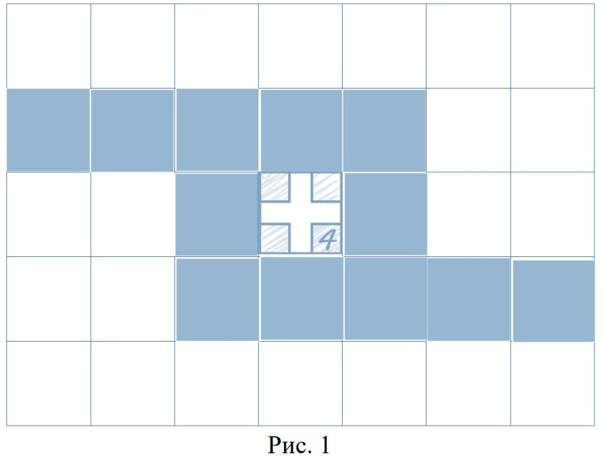
-
Собрать конструкцию, набирающую наибольшее количество баллов (рис. 1) с учетом заданных требований:
- Конструкция должна быть устойчивой и состоять только из кубиков Cuboro Basic (30 кубиков)
- Кубики должны находиться на всех серых ячейках, располагать кубики на белых ячейках нельзя
- Движения шарика в конструкции должно быть плавным
- Придумайте точку старта из кубика №12 на 3-м уровне, выход из конструкции – кубик №10
- Разрешается сдвиг, поворот кубиков, мосты, подвесы и др. креативные решения
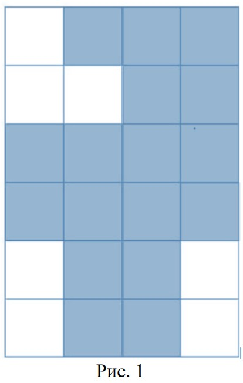
-
Построить фигуру по заданным критериям:
Старт в кубике №12 на 4 или 5 уровне (направление старта указано стрелкой), 3 кубика №11 должны быть переходами с верхнего уровня на нижерасположенный уровень (направление перехода указано стрелкой, кубики могут быть на любом уровне, но строго в своей клетке), шарик должен плавно спускаться c уровня на уровень и плавно выкатываться на стол. При строительстве кубики стоят друг над другом строго по координатной сетке, без смещений. Все кубики в получившейся фигуре (кроме кубиков 11 и 12 в строго указанных клетках относительно друг друга) при виде сверху должны быть рабочими, т.е. по ним сверху по желобу или внутри по тоннелю шарик должен хотя бы 1 раз проехать!
Ваша цель:
построить максимально эффективную конструкцию из набора Cuboro Basis (30 кубиков)
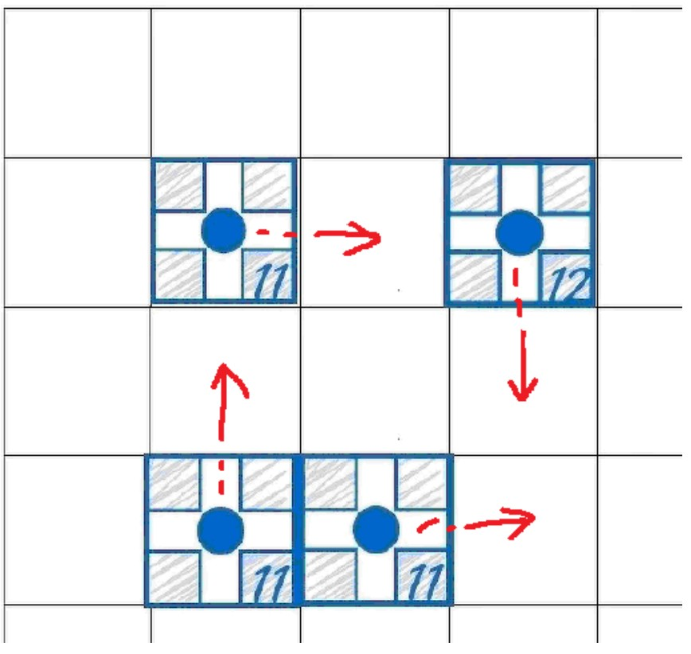
-
Собрать конструкцию, набирающую наибольшее количество баллов (рис. 1) с учетом заданных требований:
- Конструкция должна быть устойчивой и состоять только из кубиков Cuboro Basic (30 кубиков)
- Шарик обязательно должен проехать все указанные кубики и выйти в точку EXIT
- Кубик №3 шарик должен коснуться три раза!
- Кубики с изогнутыми желобами могут находиться в любом положении, но в данной клетке
- Шарик должен коснуться указанные кубики с изогнутым желобом два раза
- Старт из кубика №12
- Движение шарика по конструкции должно быть плавным
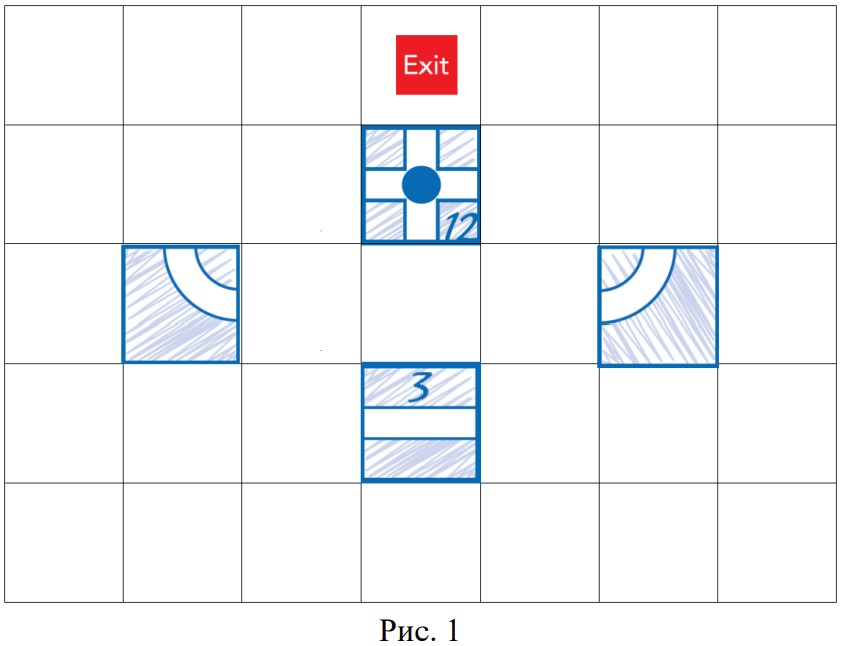
-
Соберите конструкцию с наибольшим количеством баллов.
- Условие: Спроектируйте и постройте конструкцию (длиной не более 7 кубиков), по которой шарик будет катиться ровно 10 секунд
- Допустимое отклонение — не более 0,5 секунды
-
Соберите конструкцию с наибольшим количеством баллов.
- Условие: Постройте конструкцию, в которой шарик в своем движении должен преодолеть промежуток (разрыв) между двумя кубиками, не касаясь поверхности стола
- Шарик должен пролететь по воздуху не менее 5 см и продолжить движение по желобу
-
Соберите конструкцию с наибольшим количеством звёзд.
- Условие: Используя не больше 25 кубиков, постройте самую высокую башню (конструкцию), по которой шарик прокатится от самого верхнего уровня до наинижнего
- Шарик не должен выпадать, а конструкция — падать
- Звёзды вычисляются по формуле: z = k * l - n
- z - количество звёзд
- k - количество касаний
- n - количество использованных кубиков в конструкции
- l - количество уровней в конструкции (высота)
Разные контуры для построения:
Контуры часто используют на конкурсах и соревнованиях как задания, цель которых обычно создать конструкцию дающую наибольшее количество баллов причем основание должно точно повторять данный контур. Данные контуры даны как задания на создание конструкций набирающих наибольшее количество баллов имеющих такое же основание как и контур
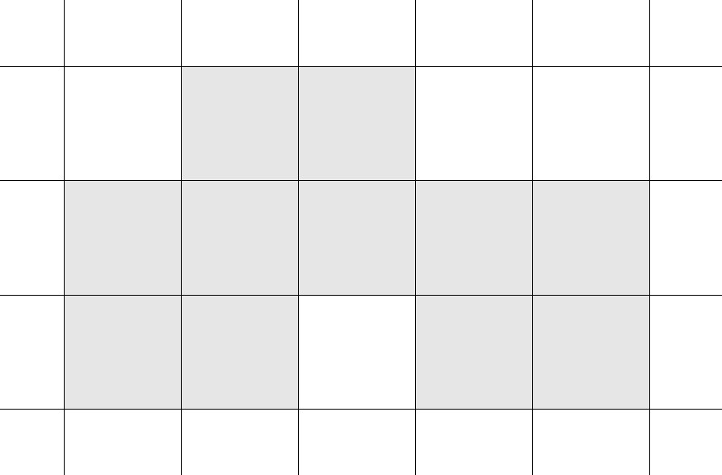
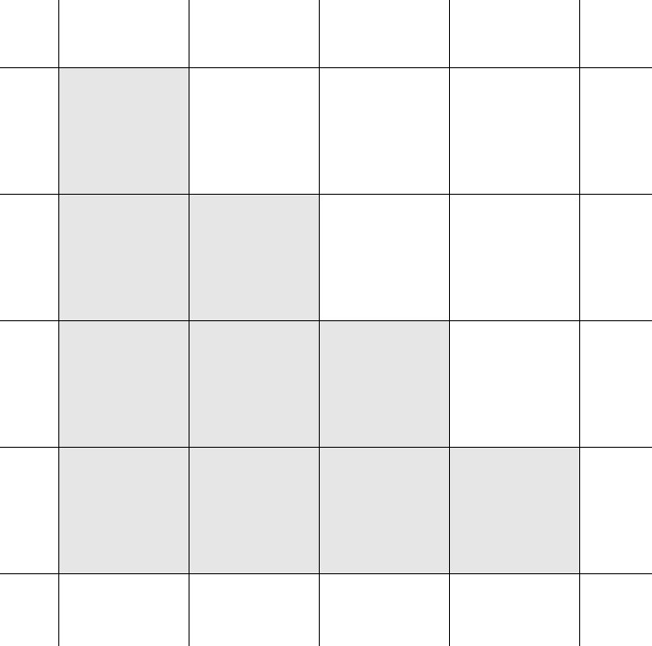
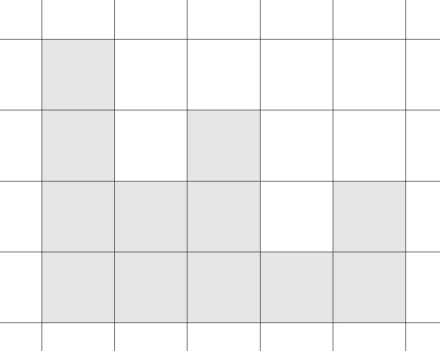
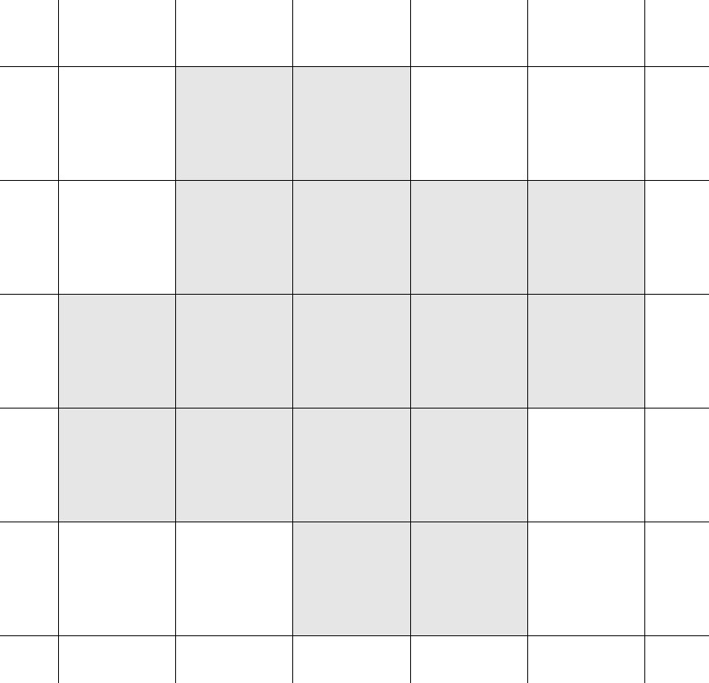
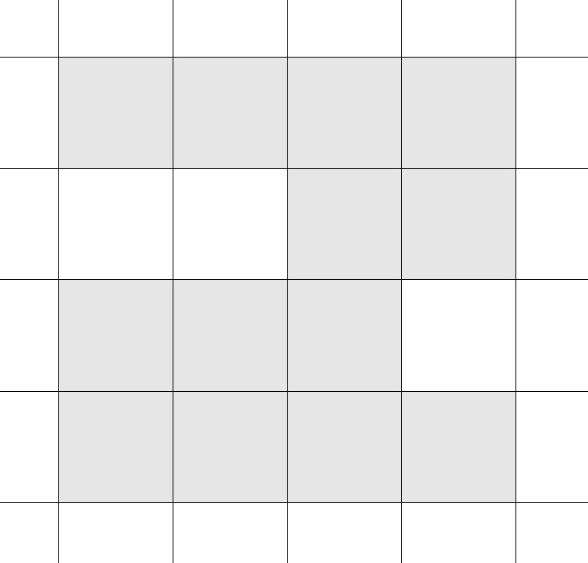
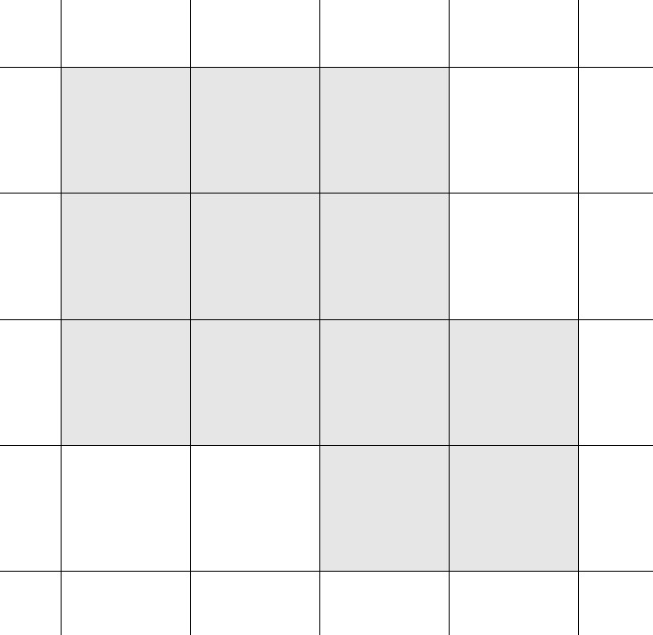
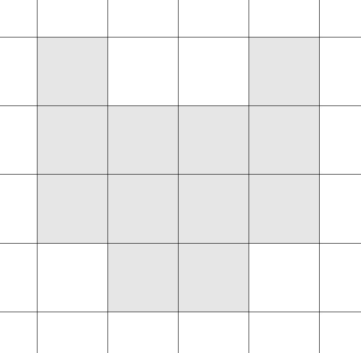
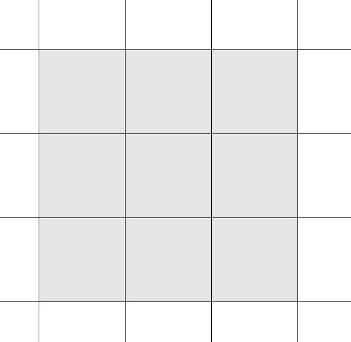
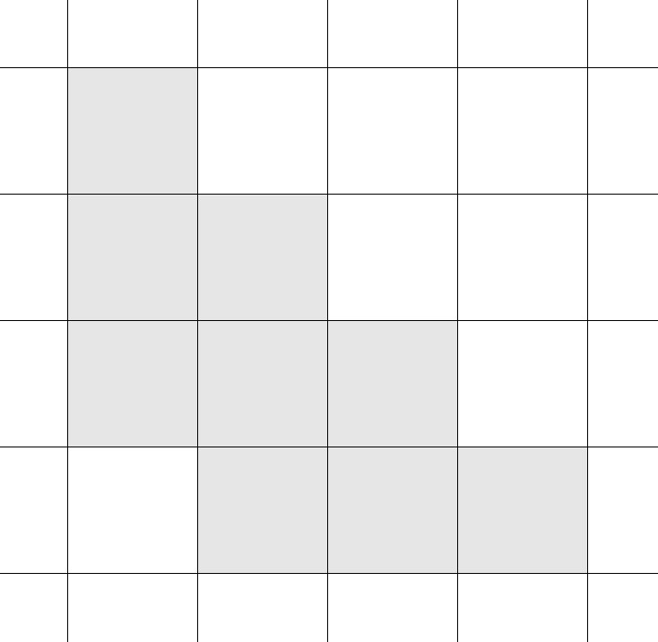
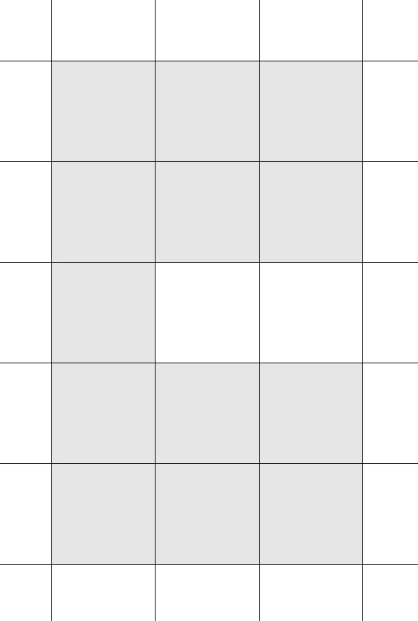
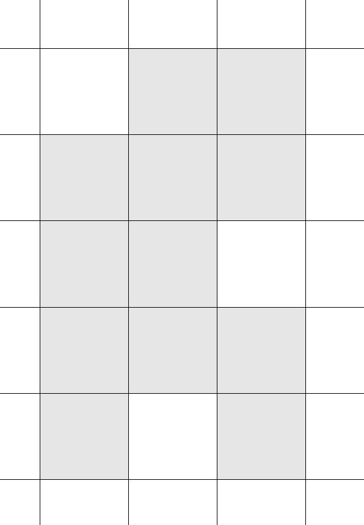
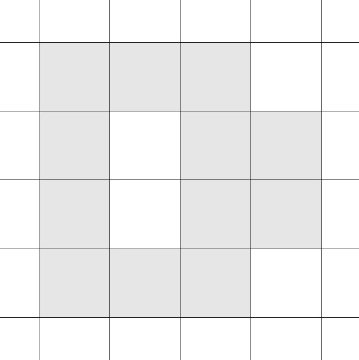
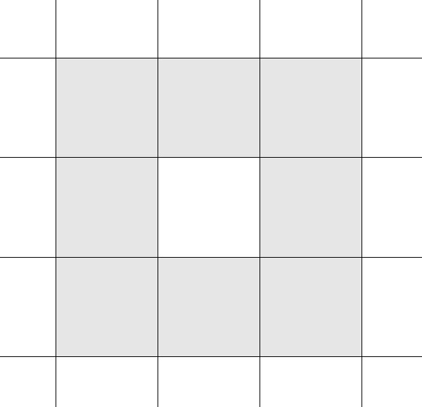
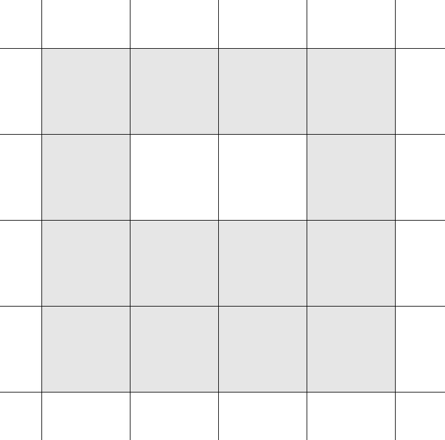
 Просто много баллов - без креатива
Просто много баллов - без креатива